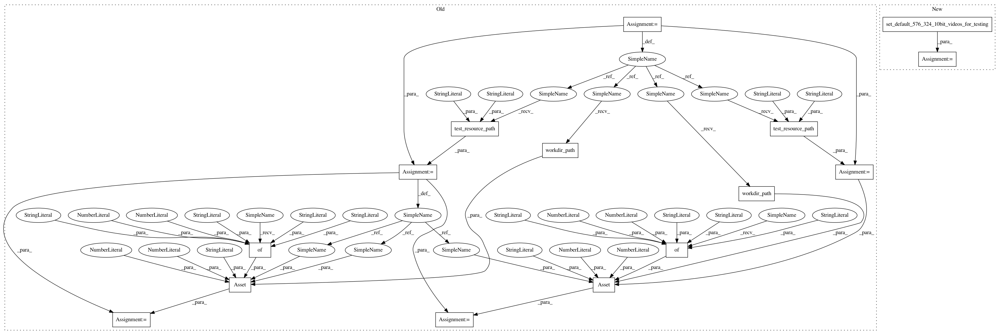

ee21d4da9a9673c930b3be646df13849c436c2e8,python/test/quality_runner_test.py,QualityRunnerTest,test_run_vmaf_legacy_runner_10le,#QualityRunnerTest#,66
Before Change
def test_run_vmaf_legacy_runner_10le(self):
ref_path = VmafConfig.test_resource_path("yuv", "src01_hrc00_576x324.yuv422p10le.yuv")
dis_path = VmafConfig.test_resource_path("yuv", "src01_hrc01_576x324.yuv422p10le.yuv")
asset = Asset(dataset="test", content_id=0, asset_id=0,
workdir_root=VmafConfig.workdir_path(),
ref_path=ref_path,
dis_path=dis_path,
asset_dict={"width": 576, "height": 324,
"yuv_type": "yuv422p10le"})
asset_original = Asset(dataset="test", content_id=0, asset_id=1,
workdir_root=VmafConfig.workdir_path(),
ref_path=ref_path,
dis_path=ref_path,
asset_dict={"width": 576, "height": 324,
"yuv_type": "yuv422p10le"})
self.runner = VmafLegacyQualityRunner(
[asset, asset_original],
None, fifo_mode=False,
After Change
def test_run_vmaf_legacy_runner_10le(self):
ref_path, dis_path, asset, asset_original = set_default_576_324_10bit_videos_for_testing()
self.runner = VmafLegacyQualityRunner(
[asset, asset_original],
None, fifo_mode=False,
In pattern: SUPERPATTERN
Frequency: 3
Non-data size: 15
Instances
Project Name: Netflix/vmaf
Commit Name: ee21d4da9a9673c930b3be646df13849c436c2e8
Time: 2020-09-22
Author: ursramamohan@gmail.com
File Name: python/test/quality_runner_test.py
Class Name: QualityRunnerTest
Method Name: test_run_vmaf_legacy_runner_10le
Project Name: Netflix/vmaf
Commit Name: ee21d4da9a9673c930b3be646df13849c436c2e8
Time: 2020-09-22
Author: ursramamohan@gmail.com
File Name: python/test/quality_runner_test.py
Class Name: QualityRunnerTest
Method Name: test_run_vmaf_legacy_runner_10le
Project Name: Netflix/vmaf
Commit Name: ee21d4da9a9673c930b3be646df13849c436c2e8
Time: 2020-09-22
Author: ursramamohan@gmail.com
File Name: python/test/vmafrc_test.py
Class Name: VmafrcQualityRunnerTest
Method Name: test_run_vmafrc_runner_yuv422p10le
Project Name: Netflix/vmaf
Commit Name: ee21d4da9a9673c930b3be646df13849c436c2e8
Time: 2020-09-22
Author: ursramamohan@gmail.com
File Name: python/test/vmafossexec_test.py
Class Name: VmafossexecQualityRunnerTest
Method Name: test_run_vmafossexec_runner_yuv422p10le